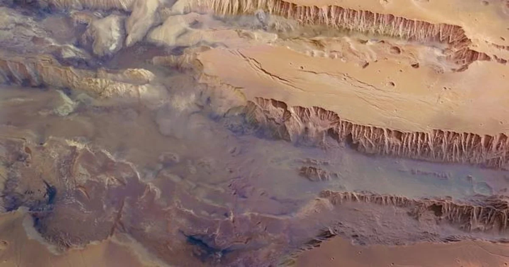
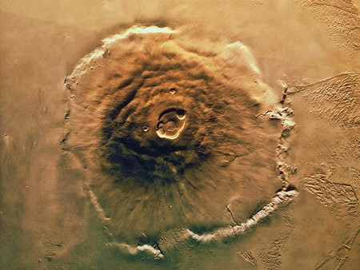

Sobre Marte
Marte es un plante rocoso, de tinte rojozo(debido a óxidos de hierro), con una atmósfera muy tenue, irrespirable y con remolinos de polvo que azotan continuamente su superficie.Actualmente, el agua sólo está en forma de hielo en el suelo(particularmente en los polos) o en forma de vapor de aire.
Los Valles Marineris son un sistema de cañones 4500 Km de largo y 11 km de profundidad en algunos puntos.
 El Monte Olimpo: es un volcán(hoy apagado) mas alto del Sistema Solar(27 Km:3 más alto que el Everest)
Deimos
es el satelite mas pequeño y externo de Marte